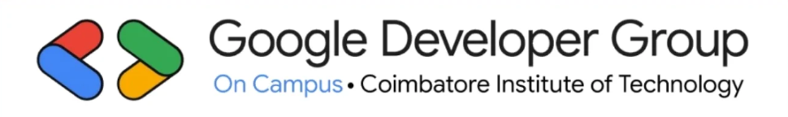

Coimbatore, India
GDG On Campus – CIT 👨🏻🎓🚀 is a Student-Driven Developer Community at Coimbatore Institute of Technology, built to Inspire, Innovate, and Empower Future Developers. We provide a platform where students can Explore New Technologies, Create Impactful Projects, and Collaborate as a Community.
Through Workshops, Hackathons, Study Jams, and Hands-On Sessions, we focus on areas like App Development, Cloud, AI/ML, Blockchain, Design, and More. Our aim is to help students go beyond academics, Sharpen Their Skills, Build Real-World Solutions, and Stay Future-Ready.
More than just coding, we nurture Creativity, Leadership, and Teamwork—equipping students with the mindset to Solve Challenges and Make a Difference. Whether you’re just starting your tech journey or aiming to scale your expertise, GDG On Campus – CIT is your Launchpad to Learn, Build, and Grow Together.
Workshops on latest technologies
Hands-on projects and hackathons
Network with developers